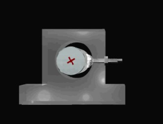
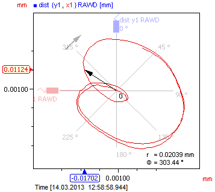
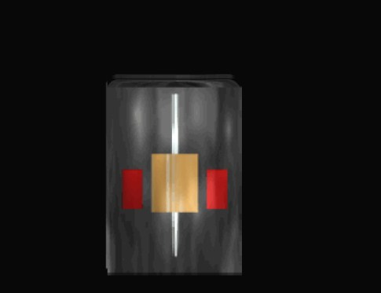
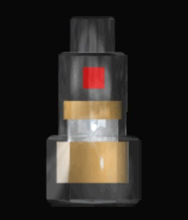
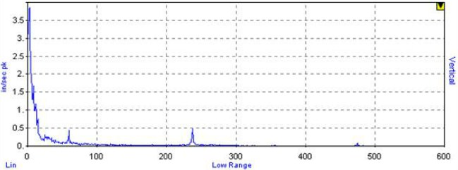

Sin buenos datos, no se pueden esperar buenos resultados.1
Los pasos para obtener buenos resultados son:
RepetitividadEl primer paso para seleccionar el sensor es elegir que necesitamos medir (Desplazamiento, Velocidad, Aceleración). Para este paso se tienen en consideración la velocidad de la máquina.
Lo siguiente que tenemos que definir es el modelo adecuado con el entorno de medida. Consideraremos la temperatura de medida, el espacio de instalación, presencia de agua u otros liquidos, etc.
Finalmente se elige la técnica y ubicacion de montaje. Esta elección estara determinada por el tipo de máquina, naturaleza de la superficie de máquina y otros factores del entorno, el rango de frecuencia requerido, y demas consideraciones de accesibilidad.
Cada vez que se mide una máquina se debe hacer de la misma manera. Ademas la máquina debe operar en las mismas condiciones en cada medición (Carga y Velocidad)
Una vez se lleva algún tiempo recogiendo datos, y sabes que el metodo de medición es repetible, se espera que los sensores se descalibren y que fallen. EL sensor mostrara signos de desgaste y falla en la señal medida. Más adelante veremos como reconocer estos fallos.
Se recomienda calibrar o reemplazar los sensores anualmente.
Son usados típicamente en monitorizado en continuo. El sensor no va en el exterior de la máquina. Esta montado en un apoyo con vision directa al eje (requiere un agujero pasante). Son llamados sondas de proximidad o sondas Eddy Current (corriente de foucault)

En la mayoria de casos se instalan pares formando un angulo de 90°. Esto permite generar un diagrama de órbitas (movimiento del eje en el apoyo).

Ventajas:
Desventajas:
Aun cuando es frecuente usar amplitudes en unidades de velocidad, los sensores de velocidad no se usan frecuentemente. El sensor de velocidad es básicamente un imán suspendido, montado entre un muelle y un amortiguador.

Ventajas:
Desventajas:
Los acelerómetros son los sensores más utilizados en análisis vibracional. El más comun es el piezoeléctrico con un amplificador interno. Un material piezoelectrico (cristal) se comprime y descomprime dentro del sensor produciendo un carga la cual es amplificada mediante una corriente constante.

Cuando un acelerómetro se conecta a la fuente de vibración, el amplificador necesita unos pocos segundos para estabilizarse.
Si la espera es demasiado corta, en el espectro se mostrará una rampa descendente conocida como "ski-slope".

Ventajas:
Desventajas:
Thank You ˊ・ω・ˋ